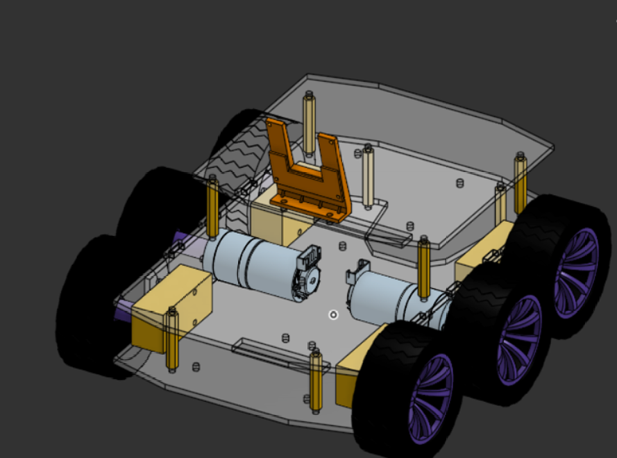

Versión 3
Semana 5 (29/9/26 - 1/10/26)
La versión 3 nace de una necesidad concreta de programación: el robot debe poder girar exactamente sobre su propio eje.
Decisión de diseño
Para lograrlo, se decidió usar una configuración tipo tanque sin transferencia de torque a las ruedas externas. Es decir, solo las ruedas con motor transmiten movimiento, y las ruedas externas giran libremente, acompañando el movimiento.
Se descartó un mecanismo que transfiriera el torque a todas las ruedas porque habría sido demasiado complicado para las ventajas que potencialmente podría ofrecer.
Importante
Con esta configuración, al girar los motores en direcciones opuestas el robot rota sobre su propio centro, que es lo que necesita el algoritmo de resolución del maze.
Primer diseño
Para esta versión se cambió completamente la disposición de las llantas para lograr un movimiento simétrico.


Primer diseño de la versión 3 - 29/9/26
Nuevo espacio para la pelota
Al desplazar los motores hacia el centro de la placa base, quedó disponible un espacio para un mecanismo pasivo y simple para recoger la pelota, que se incluyó en el diseño. Más detalles en Mecanismo para recoger la pelota.
Diseño actual
Se agregó el espacio para almacenar la pelota dentro del robot (con ligas como mecanismo pasivo) y se ajustaron todas las medidas faltantes para que funcione correctamente.

Diseño actual de la versión 3 - 1/10/26
Pendientes
Agregar al CAD los últimos componentes electrónicos.
Probar que todo funcione correctamente una vez cortado y ensamblado.